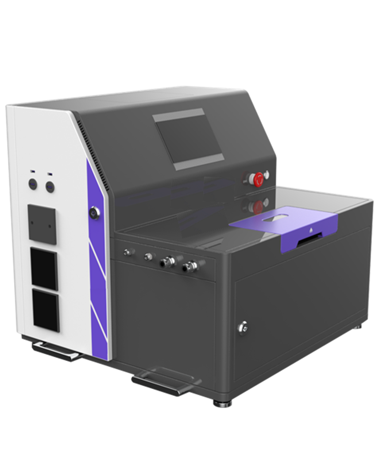
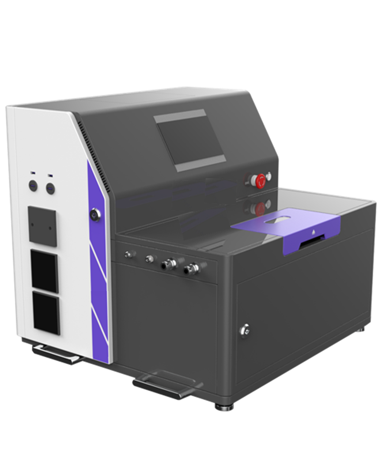

Dispositif de Chauffage Joule
Chauffage en Secondes · Champ Thermique Extrême · Contrôle de Précision
Aperçu du Produit
Le dispositif de chauffage Joule eChemStore EQ-JH-01 est un équipement innovant de traitement thermique/synthèse rapide qui utilise l'effet Joule des matériaux conducteurs. En appliquant un environnement électrique, les matériaux peuvent atteindre des températures extrêmes (1000~3000°C) en un temps ultra-court (0~10 secondes), avec des taux de chauffage allant jusqu'à 10000K/s. Le dispositif fournit un environnement électrique pour les matériaux conducteurs et non conducteurs, avec une plage de mesure de température de 400~3200°C, largement utilisé dans les domaines des batteries, de la céramique catalytique et des matériaux métalliques.
Principe du Chauffage Joule : Lorsque le courant traverse des matériaux conducteurs, l'énergie électrique se convertit en énergie thermique en raison de la résistance du matériau, générant de la chaleur Joule. Grâce à un contrôle précis du courant et de la tension, un chauffage rapide et uniforme est obtenu, atteignant les températures requises en un temps extrêmement court pour la recherche en thermodynamique transitoire et l'analyse de l'évolution des matériaux en environnement extrême.
Caractéristiques Clés
- Champ Thermique Transitoire : Chauffage à 3000°C en 0~10 secondes, taux de chauffage max 10000K/s
- Contrôle de Haute Précision : Précision de contrôle de température ±0.5%, répétabilité ±2°C, thermomètre allemand Eurotherm
- Adaptation Multidimensionnelle : Chambre à vide en acier inoxydable 316L, fenêtre d'observation φ16mm, support vide/atmosphère
- Configuration Flexible : Monophasé 220V à triphasé 380V, écran tactile à intégration RS485
- Applications Larges : Synthèse de nanoparticules, catalyseurs à atome unique, synthèse d'alliages à haute entropie
 

Avantages Techniques Fondamentaux
Champ Thermique Transitoire
Basé sur l'effet de chauffage Joule, atteindre un chauffage ultra-rapide à 3000°C en 0~10 secondes, brisant le goulot d'étranglement de "réponse lente" du chauffage traditionnel
Système de Contrôle de Haute Précision
Équipé d'un thermomètre allemand Eurotherm, précision de mesure ±0.5%, répétabilité ±2°C, assurant la fiabilité des données sous des champs thermiques extrêmes
Adaptation Multidimensionnelle
Chambre à vide en acier inoxydable 316L ou alliage d'aluminium, fenêtre d'observation φ16mm pour la surveillance de la réaction en temps réel
Couverture Complète de Recherche
Convient pour l'énergie, la science des matériaux, la synthèse avancée et d'autres recherches en thermodynamique transitoire
Spécifications du Produit
eChemStore propose deux configurations différentes de dispositifs de chauffage Joule pour répondre à divers besoins, de la R&D en laboratoire aux applications industrielles.
| Paramètres du Produit | Modèle Premium (CIS-JH-V4.0.0) | Modèle Compact (CIS-JH-V4.0.0-TD) |
|---|---|---|
| Alimentation | Triphasé 380V/40A | AC220V/16A |
| Tension de Sortie | 0-40V | 0-12V |
| Courant de Sortie | 0-500A | 0-170A |
| Temps de Montée du Courant | 2ms | 20ms |
| Largeur d'Impulsion Min | 1ms | - |
| Nombre d'Impulsions | 255 | - |
| Cycle d'Acquisition de Données | 5ms | 5ms |
| Communication | RS485+Ethernet+USB | RS485+Ethernet+USB |
| Acquisition de Données | Écran Tactile+PC | Écran Tactile+PC |
| Contrôle des Données | Écran Tactile+Logiciel | Écran Tactile |
| Contenu des Données | Température, tension, courant en temps réel | Température, tension, courant en temps réel |
| Serrage d'Électrode | Type fixe | Espacement réglable |
| Température Maximale | 3000°C (varie selon le type de support et spécifications) | 1800°C (varie selon le type de support et spécifications) |
| Chauffage Longue Durée | Dans les 2000°C longue durée (exemple plaque graphite 100×20×1mm) | Aucun (personnalisable sur demande) |
| Modes de Contrôle | Maintien temp., contrôle prog., rampe, choc thermique, compatible courbe S, onde sinusoïdale | Maintien temp., rampe, mode manuel |
| Mesure de Température | Thermométrie infrarouge | Thermométrie infrarouge |
| Plage de Température | 250-2000°C/700-3200°C/550-3000°C (importé) | 100-1400°C/250-2000°C |
| Refroidissement Alim. | Refroidissement par eau | Refroidissement par air |
| Chambre à Vide | Acier inox 304, carré, fenêtre φ16mm, saphir, ~400ml, refroidi par eau | Alliage d'aluminium, carré, fenêtre φ16mm, saphir, ~400ml |
| Système de Gaz | 1 entrée, 1 vide, 1 sortie | 1 entrée, 1 vide, 1 sortie |
| Pompe à Vide | Standard Feiyue VRD-8, contrôlée par écran | Standard pompe à palettes OPR-DV2, contrôlée par écran |
| Support Échantillon Std | Papier graphite souple, plaque graphite, tube graphite, nacelle graphite (compatible autres) | Papier graphite, nacelle graphite 50mm, tube graphite 20mm, nacelle tungstène 50mm |
| Taille Support (Personnalisable) | ≤100mm×15mm×0.2mm | ≤55mm×10mm×0.05mm |
| Quantité d'Échantillon | 500mg (densité 1) | 50mg |
| Dimensions (L×l×H) | ~750mm×610mm×660mm (dimensions réelles peuvent varier) | ~510mm×624mm×600mm (dimensions réelles peuvent varier) |
Détails de la Configuration Standard
Normes Matérielles
- Grade Matériau : Matériaux industriels résistants à la corrosion haute température
- Norme d'Étanchéité : Système d'étanchéité sous vide haute température
- Certification : Certifié CE, répond aux normes de sécurité internationales
- Assurance Qualité : Système de contrôle qualité strict
Fonctions de Contrôle
- Contrôle Intelligent : Multiples modes, support courbes personnalisées
- Surveillance Temps Réel : Affichage et enregistrement des données du processus
- Multi-Communication : Support diverses méthodes de communication
- Protection Sécurité : Multiples mécanismes de protection
- Interface Utilisateur : Interface tactile intuitive
Service de Garantie
- Période de Garantie : 1 an de garantie contre défauts de fabrication
- Support Technique : Support par équipe technique professionnelle
- Formation : Formation à l'exploitation et guide de maintenance
- Fourniture Pièces : Garantie d'approvisionnement en pièces à long terme
Options de Configuration
Selon les besoins d'application, nous proposons diverses configurations optionnelles pour une personnalisation de l'équipement.
Système de Température Avancé
- Thermomètre Importé : Mesure de température de plus haute précision
- Température Multi-points : Mise à niveau vers surveillance multicanal
- Plage Étendue : Répondre aux exigences de température spéciales
Support Échantillon Personnalisé
- Matériaux Spéciaux : Nacelle tungstène, céramique et autres options premium
- Personnalisation Taille : Tailles selon exigences échantillon
- Personnalisation Forme : Conception de support de forme spéciale
Mise à Niveau Contrôle Environnement
- Contrôle Atmosphère Précis : Contrôle précis de divers environnements gazeux
- Système Contrôle Pression : Réglage précis du degré de vide
- Contrôle Débit : Contrôle précis du débit de gaz
Logiciel & Données
- Pack Logiciel Avancé : Plus de fonctions de contrôle et d'analyse
- Analyse de Données : Logiciel professionnel de traitement de données
- Surveillance à Distance : Système de contrôle et surveillance à distance